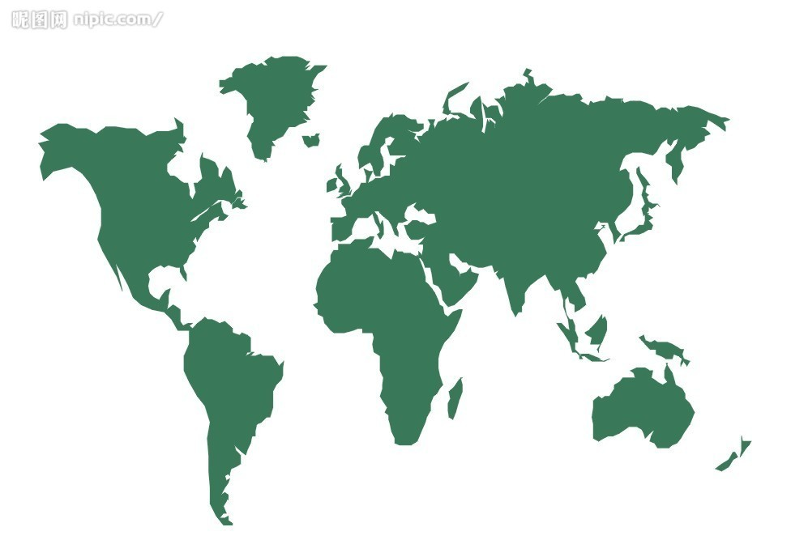

亚洲 亚洲的全名为亚细亚洲 asia，陆地面积占全球三分之一， 地理分区（西亚的分区是本网站创作的） 东亚 : 中国、蒙古国、北韩、南韩、日本 东南亚: 文莱、柬埔寨王国、东帝汶民主共和国、印度共和国尼西亚共和国、老挝、马来西亚、缅甸联邦、菲律宾共和国、新加坡共和国、泰王国、越南社会主义共和国 南亚: 孟加拉人民共和国、不丹王国、印度共和国、马尔代夫共和国、尼泊尔王国、巴基斯坦伊斯兰共和国、斯里兰卡 中亚 哈萨克、吉尔吉斯、塔吉克、土库曼、乌兹别克 西亚 阿拉伯半岛 巴林、科威特、阿曼、卡塔尔、沙地阿拉伯、阿联酋、也门 西亚低地国 塞普路斯、伊拉克、以色列、约旦、黎巴嫩、巴勒斯坦、叙利亚 西亚山国 阿富汗、亚美尼亚、阿塞拜强、格鲁吉亚、伊朗、土耳其 北亚 西伯利亚地区（即俄罗斯东部） 欧美国家将小亚细亚、地中海东岸外及高加索等地称为近东 near east；将阿拉伯半岛、波斯湾沿岸称为中东 middle east；将东亚、东南亚及西伯利亚等地称为远东 far east。
大洋洲
oceania 太平洋上的两万多个岛屿。 三大岛群∶波利尼西亚、密克罗尼西亚、美拉尼西亚非洲
非洲全称阿非利加洲 africa，赤道横穿大陆。面积约3020万平方公里，约占世界陆地总面积的20%，是世界第二大洲。总人口约为八亿。 非洲现有53个独立国。 西撒哈拉地位未定。留尼汪为法国的「海外省」。圣海伦娜为英国「直属殖民地」。 非洲是热带大陆，气候高温、少雨、干燥。但少数地区，如地中海沿岸、高原地区等，气候凉爽，甚至四季如春。 http://ihouse.hkedcity.net/~hm1203/links/africa4.gif 非洲海岸线平直（海岸线还不及欧洲的海岸线长），半岛及海湾极少。 地势较为平坦，为高原大陆。埃塞俄比亚高原被称为「非洲屋脊」，海拔在1000米以上。乞力马扎罗山是非洲最高峰，海参拔5895米。 非洲有世界上最大的沙漠∶撒哈拉沙漠，横盘整个非洲大陆北部，面积920万平方公里，占非洲总面积的三分之一。西南部还有纳米比亚沙漠和卡拉哈力沙漠。 东非大裂谷是世界最长的裂谷，东支南起希雷河河口，向北越过红海至死海北部，全长约6400公里。河流多峡谷、急流和瀑布，水力资源丰富，但不利于航行。主要河流：流入大西洋的有尼罗河、刚果河、尼日尔河、塞内加尔河、沃尔特河等；流入印度共和国洋的有赞比西河、林波波河、朱巴河等。非洲的湖泊多集中於东非高原，大湖又是大裂谷的一部分：马拉维湖、坦噶尼喀湖、基伍湖、爱德华湖、区伯特湖、维多利亚湖、图尔卡纳湖等。维多利亚湖是非洲最大的湖泊，又是世界第二大淡水湖。坦噶尼喀湖是世界第二深湖。此外，位于埃塞俄比亚高原上的塔纳湖海拔1830米，是非洲最高的湖。乍得湖则是内陆盆地的最大湖泊。 非洲的自然资源十分丰富，石油、天然气、铁、锰、铬、钴、镍、钒、铜、铝、锌、锡、铀和磷酸盐都有可观的储量，黄金和钻石更是久负盛名。 非洲的植物达40000种以上，有不少是稀有或特有的。非洲的森林面积占总面积的21%，红木、黑檀木、花梨木、柯巴木、乌木、樟木、栲木、胡桃木、黄漆木、栓枝栎等贵重木材应有尽有，而且储量丰富。非洲草原辽阔，占总面积的27%，畜牧潜力巨大。非洲的渔业资源也是十分丰富的。有许多地区已被开辟为动物保卫区。 非洲经济落后，是世界经济发展水平最低的大陆。农业是非洲经济的支柱，工业基础薄弱，管理和技术落后。交通运输也处于落后状态。 非洲是人类发源地之一，曾有不少辉煌的古代文明。近代开始，非洲国家一个个被欧洲殖民者征服；大多数国家都是1960年之后独立的。 非洲大部分民族处於部族状态，部族数量极多，部分矛盾根源很深，时常引起战争。美洲
< 南/北美洲 美洲的命名，普遍的说法是为纪念意大利的一位名叫亚美利哥・维斯普奇的著名航海家。1499年。亚美利哥随同葡萄牙人奥赫达率领的船队从海上驶往印度，他们沿着哥伦布所走过的航路向前航行，克服重重困难终于到达美洲大陆。亚美利哥对南美洲东北部沿岸作了详细考察，并编制了最新地图。1507年，他的《海上旅行故事集》一书问世，引起了全世界的轰动。在这本书中，引人入胜地叙述了“发现”新大陆的经过，并对大陆进行了绘声绘色的描述和渲染。亚美利哥向世界宣布了新大陆的概念，一下子冲跨了中世纪西方地理学的绝对权威普多列米制定的地球结构体系。于是，法国几个学者便修改和补充了普多列米的名著《宇宙学》，并以亚美利哥的名字为新大陆命名，以表彰他对人类认识世界所做的杰出贡献。新《宇宙学》一书出版后，根据书中的材料，在地图上也加上了新大陆――亚美利哥洲。后来，依照其他大洲的名称构词形式，“亚美利哥”又改成“亚美利加”。起初，这一名字仅指南美洲，到1541年麦卡托的地图上，北美洲也算美洲的一部分了。 北美洲地区又可细分出中美洲及加勒比海地区。 美国以南地区，亦因其语言而常称为拉丁美洲 latin america。欧洲
欧洲是欧罗巴洲 europe 的简称，位於东半球，亚洲的西面。面积1016万平方公里，是世界第六大洲。人口超过7亿，是人口最密集的大洲。 欧洲有46个独立国家，另有多处属地。 欧洲多半岛、多岛屿和多海湾，海岸线长达3.8万平方公里，是世界海岸线最曲折的一个洲。 欧洲地形以平原为主，次为海拔200米以上的高原、丘陵和山地。欧洲平原西起大西洋，东至乌拉尔山（ural, 欧亚分界），横贯欧洲大陆，绵延数千里。 阿尔卑斯山脉 alps 横亘南部，是欧洲最大的山脉。东南部有高加索山脉 caucasus，其主峰厄尔布鲁士山 elbrus 海拔5642米，是欧洲最高峰。 欧洲河流网稠密。主要河流有伏尔加河 volga、多瑙河 danube、乌拉尔河 ural、第聂伯河 dnieper、顿河 don、莱茵河 rhine、罗纳河 rhone 和泰晤士河 thames 等。湖泊众多，多小湖群。 欧洲大部分地区的气候湿润温，自然资源丰富。 方千米，约占世界陆地总面积的6%，是世界上最小的一个洲。共有24个国家和地区。人口2700万，约占世界总人口的0.5%，是除南极洲外，世界人口最少的一洲